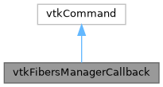

|
MUSICardio 4.2
MUSICardio application created by Inria Epione, IHU LIRYC and Université de Bordeaux
|
Loading...
Searching...
No Matches
|
MUSICardio 4.2
MUSICardio application created by Inria Epione, IHU LIRYC and Université de Bordeaux
|
#include <vtkFibersManagerCallback.h>


Public Member Functions | |
| virtual void | Execute (vtkObject *caller, unsigned long, void *) |
| vtkPolyData * | GetOutput () const |
| vtkAlgorithmOutput * | GetOutputPort () const |
| vtkLimitFibersToVOI * | GetFiberLimiter () const |
| vtkLimitFibersToROI * | GetROIFiberLimiter () const |
Static Public Member Functions | |
| static vtkFibersManagerCallback * | New () |
vtkFibersManagerCallback declaration & implementation